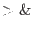

XMM-Newton Science Analysis System
omichain (omichain-1.71.1) [xmmsas_20170112_1337-16.0.0]
The location of the ODF files to be processed is specified by either setting
the environment variable SAS_ODF (setenv SAS_ODF directory_path, c-shell), or by
specifying the input directory (omichain inpdirectory=directory path), or by
setting the environment variable SAS_ODF to a SAS summary file. For the latter,
the omichain will extract the directory path from the SAS summary file.
It is a good idea to ensure that the SAS environment variable SAS_VERBOSITY
is set to 5 (setenv SAS_VERBOSITY 5, so that all messages, warnings
and errors from the omichain are displayed. It is also useful to redirect
the output to a log file (omichain ......

omichain.log &, c-shell).
All ODF files should be in an uncompressed state (otherwise some functions
in the omichain won't
work properly).
- Use command `omichain` to process the ODF data set in the current
directory or to where SAS_ODF has been set to, and to place the product
files in the current directory.
- Use command `omichain inpdirectory=input-directory-path` to process
the OM ODF data set in the specified directory, and to place the product files in the
current directory. In the following, the term output file refers to a file
created by one one of the OM SAS programs during the running of the omichain.
Apart from two files, which are ps (PostScript) and pdf (Portable Document Format) files,
all the other output files are FITS (Flexible Image Transport System) files.
- Use command `omichain outdirectory=output-directory-path` to process the
ODF data set in the current directory or to where SAS_ODF has been set to,
and to place the output files in the specified directory.
- Use command `omichain inpdirectory=input-directory-path
outdirectory=output-directory-path` to specify both the location of the ODF
data set and the directory where the output files are to be placed.
Using the default parameter settings the omichain will process all the image
files in the data directory. However, if only the images of particular
exposures are required to be processed, or the images for particular filters,
the parameters exposures and filters, respectively, can be
used to achieve this as follows:
- To specify which filter/filters to process add the parameter filters=''filter1 filter2 ... to any of
the previous commands.
- To specify which exposure/exposures to process add the parameter exposuress=''exposure1 exposure2 ... to any of
the previous commands.
- To perform source-detection on the mosaiced sky-images add the argument processmosaicedimages=t to the command-line.
(In the event that the SAS summary files does not exist, it can be created by running the SAS program
odfingest.)
Some of the parameters for individual tasks can be set using the appropriate
omichain parameter - the parameter names are the same as the task parameter names,
prefixed with the name of the task - Please see Section 9.0.
Subsections
XMM-Newton SOC/SSC -- 2017-01-12